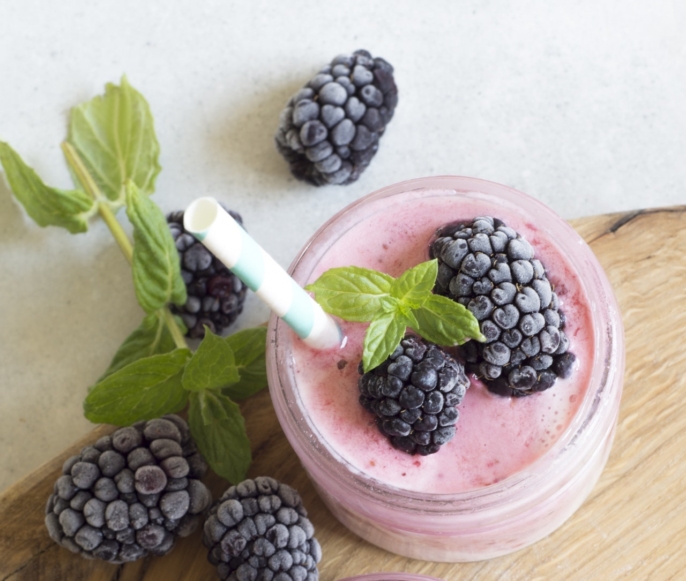

Vegetarians and vegans are always eager to find sources of protein. So here's a recipe for a quick and easy smoothie that will give you energy for your day!
Any blender will do, but for the the best power and versatility, I recommend the Vitamix. For a cheaper, on-the-go option, try the NutriBullet.
Add 1-1/2 cups of milk - Regular milk is just fine, but for vegans, both soy milk and almond milk are delicious options.
Add 1 banana - Bananas are great thickeners.
Add 1 cup of frozen berries - If using fresh berries, add cubed ice to make cold if desired.
Add 1 tablespoon of either vanilla or chocolate flavored protein powder.